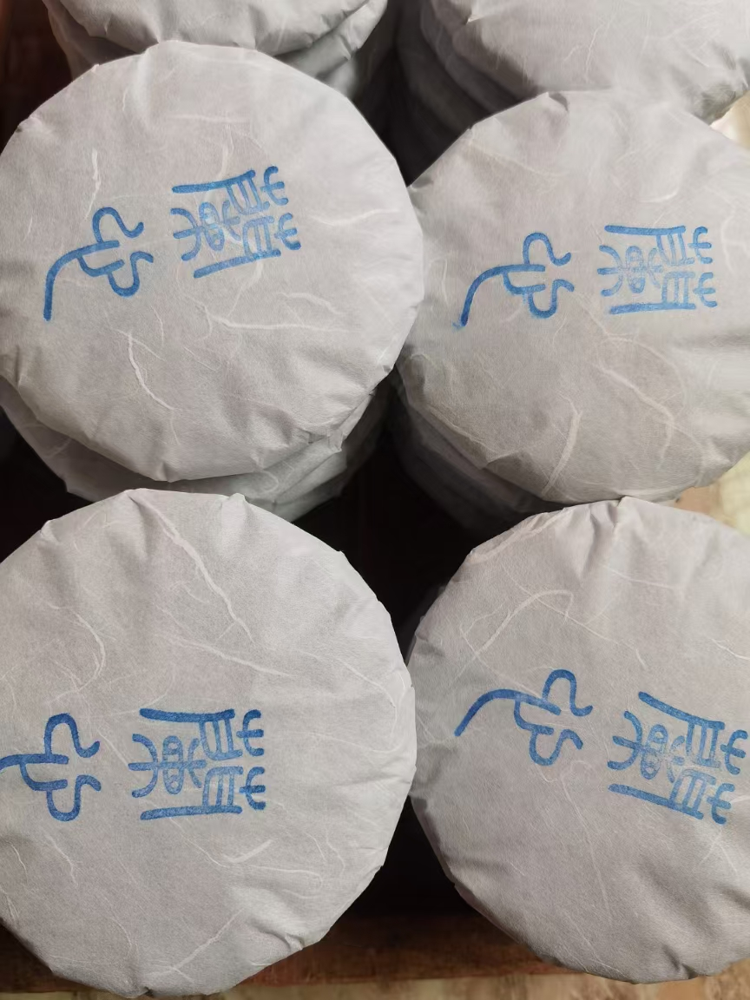
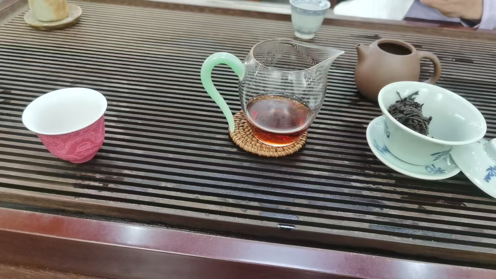
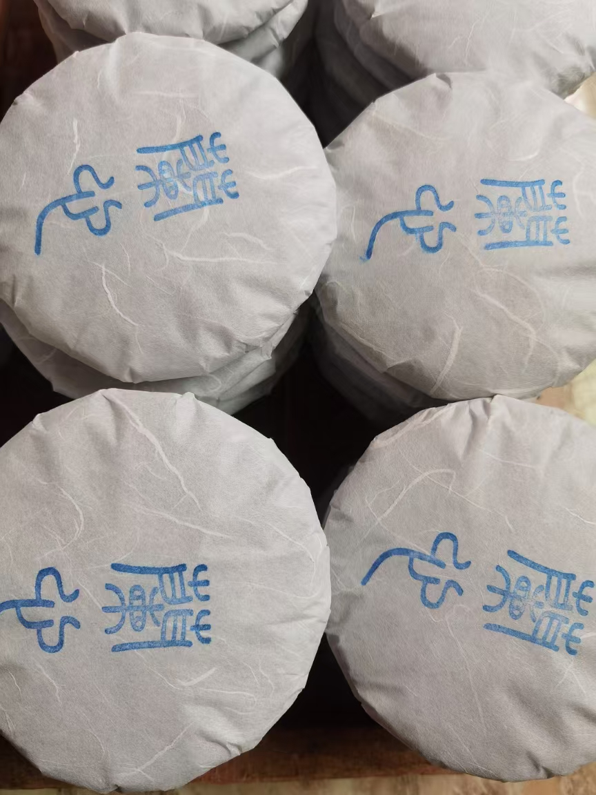
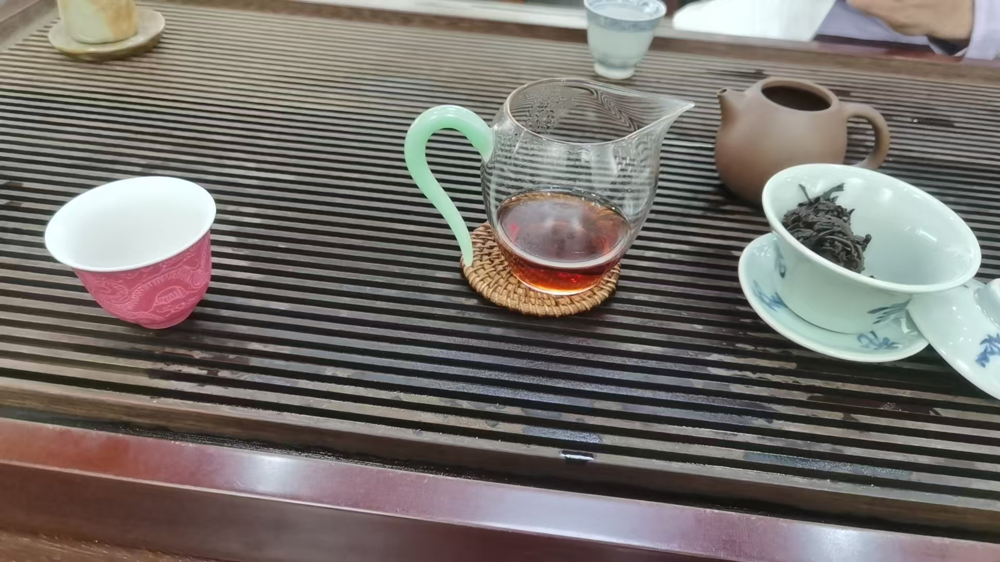

欢迎来到我的茶世界 / Welcome to My Tea World
自我介绍 / About Me
我叫阿布，出生并成长于云南西双版纳的勐海县。自小便浸润于茶香之间，熟悉采普洱茶、制茶、品茶与分享的全过程。 以古树茶原生态为核心理念，我坚持传统手工技艺，追求天然纯净的风味。 每一泡茶都承载着山林的气息与时光的温度，愿与更多喜爱茶文化的朋友共品此味、共赏此情。
My name is Abu, born and raised in Menghai, Xishuangbanna, Yunnan. From picking Pu-erh tea to processing, tasting, and sharing, I've immersed myself in tea since childhood. I focus on ecological ancient tree tea, insisting on traditional handcrafting and pure natural taste. Every sip carries the fragrance of the forest and the warmth of time. Let's enjoy tea together.
茶成品专集 / Tea Product Gallery


 





茶专集视频 / Tea Video Collection
联系方式 / Contact
姓名 / Name： 阿布 / Abu
电话 / Phone： 13682526768
微信号 / WeChat： zhangjianqin141319